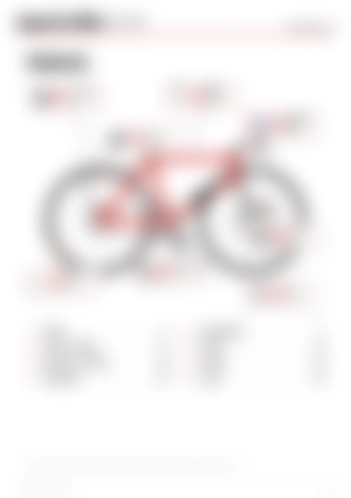
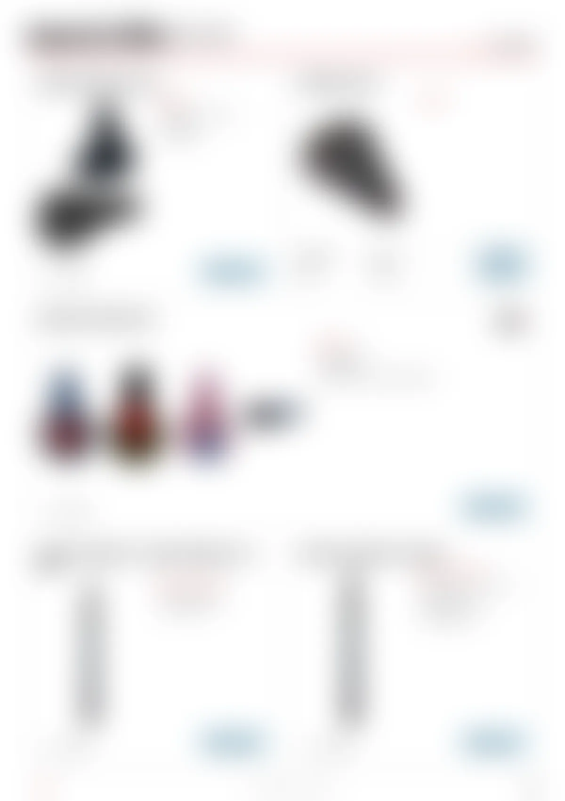
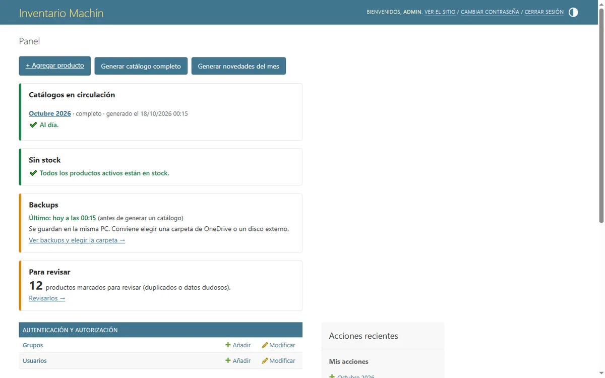
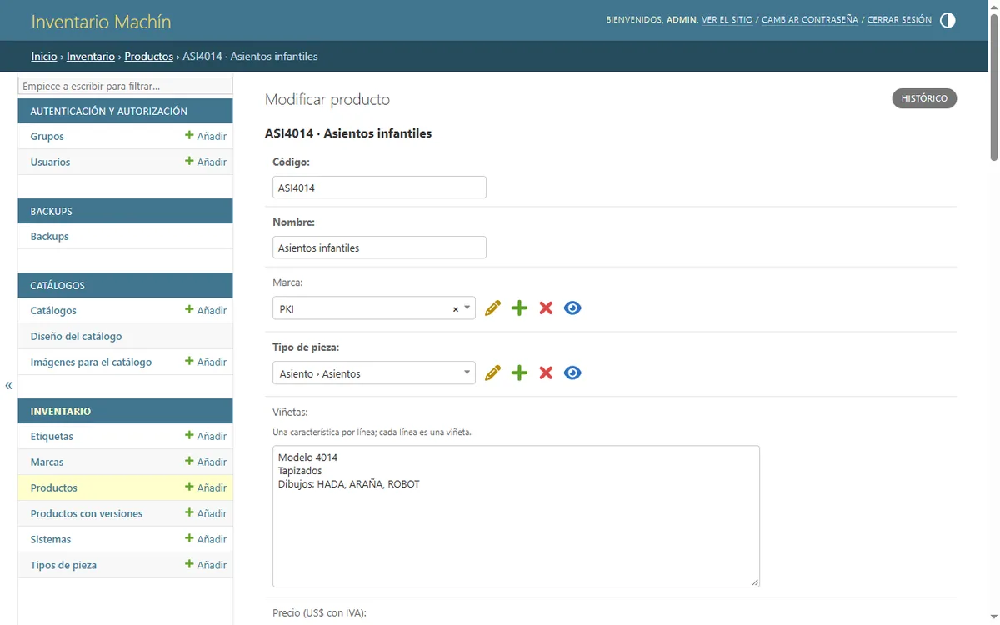
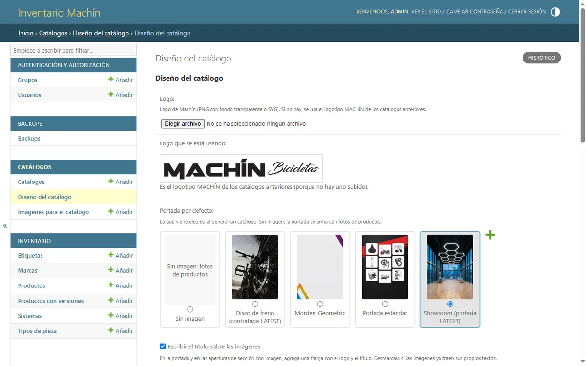

Catálogo PDF automático
Portada, índice clickeable con el bosquejo de la bici, una apertura por sección y fichas de 6 por página. Los productos con versiones salen en una sola ficha, y los que tienen muchas fotos ocupan la fila entera.
Inventario y catálogos PDF automáticos para una distribuidora de repuestos de bicicleta.
El dueño de la distribuidora armaba los catálogos a mano: fotos, códigos y precios acomodados página por página. Cada vez que cambiaba un precio o se terminaba un producto había que volver a tocarlo, y era fácil que un catálogo viejo siguiera circulando.
Con auto-catalog carga cada producto una sola vez. El sistema arma el catálogo en PDF, avisa lo que está sin stock y hace backups solo.
Portada, índice clickeable con el bosquejo de la bici, una apertura por sección y fichas de 6 por página. Los productos con versiones salen en una sola ficha, y los que tienen muchas fotos ocupan la fila entera.
La pantalla de inicio dice si un catálogo en circulación quedó desactualizado: productos sin stock, discontinuados, con otro precio o que hoy entrarían y no están.
Un script con PyMuPDF sacó los productos y las fotos de los catálogos hechos a mano. Deja un CSV para revisar en Excel y la importación valida todo antes de guardar.
Uno por día, uno antes de importar y uno antes de generar un catálogo, con rotación por días y semanas. Se restauran con un comando.
Un .exe que trae su propio Python con todo lo necesario: la PC del cliente no necesita instalar nada más ni permisos de administrador.





El catálogo se maqueta como una página web, con HTML y CSS, y lo imprime a PDF el Microsoft Edge que ya trae Windows. Después, PyMuPDF corrige los links del índice para que salten a cada capítulo.
El dueño trabaja en una sola PC. Corriendo ahí, la app no tiene costo mensual, anda sin internet y los datos no salen de su máquina. Para no perderlos están los backups, que pueden ir a OneDrive o a un disco externo.
El dueño sabe si tiene un producto, no cuántos. Una cantidad que nadie mantiene al día es peor que no tenerla, así que el stock es un sí o un no: lo que no está sale del catálogo o aparece con el sello SIN STOCK.
Antes de importar productos se hace un backup, y si falla no se importa. Antes de generar un catálogo también se intenta uno. Y restaurar un backup guarda primero el estado actual, para poder deshacerlo.